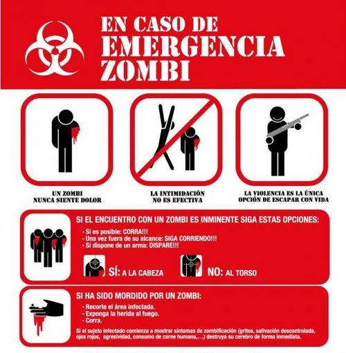

Instrucciones
 De: La Frikipedia, la enciclopedia extremadamente seria.
De: La Frikipedia, la enciclopedia extremadamente seria.

|
ATENCIÓN
Este artículo es un truño, es sólo un esbozo de un artículo o es demasiado corto o el que lo ha escrito se cree que esto es un vil diccionario. Su autor puede estar bajo los efectos del alcohol o ser un inútil. Quizá haya pistas en la discusión. ¡Mejora la Frikipedia ampliando y mejorando el artículo!
|
 Un instructivo cualquiera en una situación cualquiera
Las instrucciones son documentos de gran poder chamánico de culturas ancestrales. Aún así, dichos documentos, generalmente,
vienen impresos en papel. Sus funciones son varias:
- Último recurso para hacer funcionar cualquier aparato que hayas visto por primera vez en tu vida.
- Papel higiénico para informáticos.
- Pedazo de papel, o si es algo más informático en CD-RUM, en el que pone cómo usar algo.
Ejemplos
Cómo usar el papel higiénico
Necesitas:
Ahora:
- Primero vas al baño Haces lo que siempre haces allí
- No te distraigas con tu Diversión
- Bueno, una sola no le hace daño a nadie.
- Otrá más
- solo hacemos unas 29 más y listo
- Luego de cagar, tu trasero estará perfumado.
- Para sacarte ese perfume, busca el papel higiénico.
- Luego de 2 o 3 horas de haberlo buscado, seguro ya lo haz encontrado.
- Saca el papel higiénico que necesitas
- Cuidadosamente asegúrate de que no tenga nada
- Llama por teléfono a tu Mami para que vea si lo estás haciendo bien
- Si la respuesta es sí, sigue con lo siguiente, si es no
te cagas inténtalo otra vez
- Tira el papel al váter y límpiate con el dedo
Situaciones típicas
- La gente lee las instrucciones cuando ve que no se aclara y que, probablemente, se ha cargado algo.
- En el caso de que una mujer tenga que programar el vídeo, se lee las instrucciones, las intenta entender, y después le pide ayuda al hombre de la casa.
- La gente lee las instrucciones cuando quiere saber como se monta un mueble del ikea pero...¿están en alemán,suahili,chimburebse?
Véase también
Autor(es):
- Nexo
- Hari Seldon
- Kenedhor
- UNIX4ALL
- Doctor grijander
- Frikiman
- NRikee
- Law ripley
- HappyST
- Gallardo
Frikipedia 2005-2016, Licencia
GFDL 1.2 - Extraído por FrikiLeaks